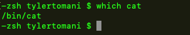
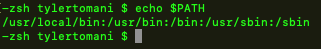

to see the location of a command which is a file type the command which
this will show the location of that command/file
path allows us to see how the unix system goes about accessing these programs/files
This list is a list of directories where linux will go looking for the file
it looks for the file in this order
So the above will first look for the file in
/usr/local/bin:
then,
/usr/bin:
and so on
this is also the order of preference linux looks for it
this is also all customizable
Notice how we change the path which tell unix to Only look in the specified locations
Since we changed the path, and ls is located in /bin/ls
linux will not find it because it is only looking in
/usr/local/bin: and /use/binand Notjust /bin
if we change the path this way it will only change the path during this sessions
so if we quit terminal or open a new terminal window, the change will not apply